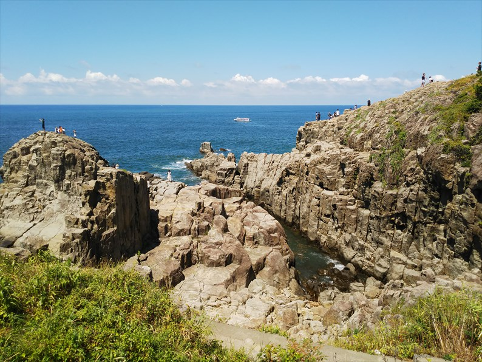

再び北陸路です。
青春１８で北陸路を旅出来るのもあと３シーズンとなっているので、悔いのないよう訪問したいものです。
今回は北陸のベタな観光地の中で未踏の地である「あそこ」へ行ってきました。
ＪＲ福井駅の北側にあるえちぜん鉄道の福井駅にやってきま
した。
このあたりは乗り継ぎのたびにうろうろしてたので、新鮮さ
はありません。
と言いながら、えちぜん鉄道のエリアまで来たのは久々です。
前回はこどもが小さいころに恐竜博物館に行った時
で、今の新幹線の高架のところにあった仮駅やった
気がします。
この車両、ボックスシートなんすね。こりゃええわ。

たんぼだらけののどかな景色の中を進み、三国港駅
に到着です。
古めの駅舎が残ってます。
何度か来てますが、冬に来た印象が強くて暗い雰囲
気の駅前やった記憶があったんですが、夏の日に来
るとまた印象も変わりますね。
ここからバスに乗り換えです。意外にも観光客もちらほら。
あの岬の裏側が目的地かな。
バス停「東尋坊」到着です。
いかにも観光地の入口っちゅう感じです。

さっそく海の幸を売ってますね。
いかにもベタな観光地っちゅう感じの店が並んでま
す。観光客も多くて盛り上がってきます。
ジャジャーン！目的地の東尋坊です！

しかし、思ってたより小さいですね。イメージして
たものの三分の二ぐらいの高さしかありません。
この高さでは、飛び降りても死ねないっすよね。
それにしても暑いので、土産物屋でソフトクリ−ム
を買ってかぶりついてしまいました。
さて、来た道を戻っても面白くないので、芦原温泉
駅に向かいます。
実は昔、国鉄三国港線というのが金津（現：芦原温
泉駅）から三国港まで運行されていました。乗って
来たえちぜん鉄道の末端部分が、その路線です。
芦原温泉駅。
外に出たのは久々ですが、見違えるほど立派な駅に
変わってました。新幹線パワー、恐るべし・・・
昔ながらの駅前ビル？も健在でした。よかった良か
った。
ここからは、今日のもう一つの目的地に向かいます。
こういったアナログな特急の案内も風前の灯ですね。
敦賀駅。こちらも日中に降り立つのは久々です。
前回の富山の温泉に行ったときは改札出てちょろっ
と進んだだけでしたが、こう見ると、ちゃんと駅名
標は見えてましたね。失礼しました。
こちらも立派な駅に変貌しています。
下のほうのイラストは地元の高校性が描いたもので、いいセンス
してますね。
さて、北陸本線→東海道本線と乗り継いで、大垣に
やって来ました。
何しに来たかというと、これに乗るためです。
予想通り、盆の輸送で通常２両が４両になってます
ね。
やって来ました新型のひだ。去年の冬に乗った時は
雪の影響で超満員でデッキに立ってただけなので、
ほぼ初乗りです。
盆の前半なので、大阪行きは空いてると思ってたん
ですが、予想に反してほぼ満席でした。
新型だけあって、乗り心地は上々。
で、なんでこれにわざわざ乗ってるかというと、新
型に乗りたかったわけではなく、日中の新垂井線に
乗ってみたかったからです。
新垂井線自体は何度か乗ってて、日中も乗ってるは
ずなんですが、自信がなかったので改めて乗車した
という訳です。
おっ、これは垂井駅の跡っすね。
快適な旅は米原で終了。ここからはいつも通りの鈍
行旅です・・・